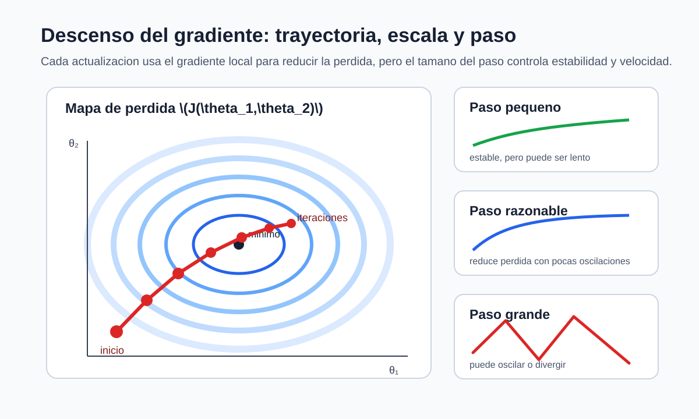

Descenso del gradiente
Iteraciones, estabilidad y geometría de la optimización
En el capítulo anterior, np.linalg.lstsq calculó directamente el minimizador de
\[ \widehat R_n(\boldsymbol\theta) =\frac1{2n} \lVert\mathbf X\boldsymbol\theta-\mathbf y\rVert_2^2. \]
Supongamos ahora que solo podemos evaluar su gradiente. Para tres observaciones con \(x=(-1,0,1)\), \(y=(1,3,5)\) e intercepto, comenzamos en \(\boldsymbol\theta^{(0)}=(0,0)\). El gradiente inicial es
\[ \nabla\widehat R_n(\boldsymbol\theta^{(0)}) =\frac13\mathbf X^\top (\mathbf X\boldsymbol\theta^{(0)}-\mathbf y) =\begin{bmatrix}-3\\-4/3\end{bmatrix}. \]
Moverse una distancia \(\alpha=0.2\) en la dirección opuesta produce
\[ \boldsymbol\theta^{(1)} =\boldsymbol\theta^{(0)} -0.2\nabla\widehat R_n(\boldsymbol\theta^{(0)}) =\begin{bmatrix}0.6\\0.267\end{bmatrix}. \]
La pérdida baja de 5.833 a 3.881. No hemos resuelto un sistema ni formado una inversa: usamos información local para construir una secuencia de parámetros.
De la derivada a un algoritmo
Para una función diferenciable \(J:\mathbb R^p\to\mathbb R\), el gradiente \(\nabla J(\boldsymbol\theta)\) señala la dirección de mayor crecimiento local. La aproximación de Taylor
\[ J(\boldsymbol\theta+\boldsymbol h) \approx J(\boldsymbol\theta) +\nabla J(\boldsymbol\theta)^\top\boldsymbol h \]
muestra que, entre desplazamientos de norma fija y suficientemente pequeña, la elección \(\boldsymbol h\) opuesta al gradiente produce la mayor disminución de primer orden. El descenso del gradiente repite
\[ \boldsymbol\theta^{(t+1)} =\boldsymbol\theta^{(t)} -\alpha\nabla J(\boldsymbol\theta^{(t)}), \]
donde \(\alpha>0\) es la tasa de aprendizaje.
Para mínimos cuadrados,
\[ \nabla\widehat R_n(\boldsymbol\theta) =\frac1n\mathbf X^\top (\mathbf X\boldsymbol\theta-\mathbf y). \]
La siguiente implementación guarda la pérdida inicial y la obtenida después de cada actualización. Las firmas coinciden con las utilizadas en los notebooks del módulo.
import numpy as np
def half_mse_loss(X, y, theta):
error = X @ theta - y
return 0.5 * np.mean(error ** 2)
def gradient_descent(X, y, alpha=0.1, max_iter=1000, tol=1e-8):
n, p = X.shape
theta = np.zeros(p, dtype=float)
history = [half_mse_loss(X, y, theta)]
for _ in range(max_iter):
gradient = X.T @ (X @ theta - y) / n
if not np.all(np.isfinite(gradient)):
raise FloatingPointError("gradiente no finito")
if np.linalg.norm(gradient) <= tol:
break
theta = theta - alpha * gradient
loss = half_mse_loss(X, y, theta)
if not np.isfinite(loss):
raise FloatingPointError("pérdida no finita")
history.append(loss)
return theta, np.asarray(history)En el ejemplo inicial, las primeras iteraciones con \(\alpha=0.2\) son:
| iteración | intercepto | pendiente | pérdida | norma del gradiente |
|---|---|---|---|---|
| 0 | 0.000 | 0.000 | 5.833 | 3.283 |
| 1 | 0.600 | 0.267 | 3.881 | 2.664 |
| 2 | 1.080 | 0.498 | 2.595 | 2.165 |
| 3 | 1.464 | 0.698 | 1.745 | 1.764 |
| 4 | 1.771 | 0.872 | 1.179 | 1.441 |
| 5 | 2.017 | 1.022 | 0.802 | 1.180 |
El minimizador es \((3,2)\). Cada columna progresa a una velocidad distinta; la secuencia todavía no ha convergido después de cinco pasos, pero la pérdida y la norma del gradiente disminuyen de manera coherente.
La tasa decide la trayectoria
La dirección del gradiente no fija la longitud del paso. En una superficie convexa, un paso pequeño puede avanzar lentamente y uno grande puede atravesar el valle y aumentar la pérdida.

Con el mismo ejemplo, \(\alpha=1.8\) hace oscilar el intercepto alrededor de 3, aunque la pérdida decrece. Con \(\alpha=2.2\) la pérdida comienza en 5.833 y luego toma los valores 6.770, 9.394, 13.451 y 19.352: el algoritmo diverge. Ni la convexidad de la pérdida ni la corrección del gradiente hacen estable cualquier tasa.
Una curva de pérdida debe leerse junto con la norma del gradiente y el estado de los parámetros:
| comportamiento | explicación compatible | comprobación siguiente |
|---|---|---|
| disminución suave | paso estable | comparar con una solución de referencia |
| disminución muy lenta | paso pequeño o geometría alargada | revisar escala y espectro |
| oscilación decreciente | paso cercano al límite de estabilidad | reducir \(\alpha\) |
| crecimiento sostenido | paso fuera del intervalo estable | detener y reducir \(\alpha\) |
nan o inf |
desbordamiento tras divergencia | revisar primero la historia finita |
| pérdida estable pero alta | familia limitada o parada prematura | separar optimización de modelado |
Que la pérdida de entrenamiento converja solo responde si el algoritmo resolvió el problema empírico. No demuestra que la familia sea adecuada ni que el modelo funcione en observaciones nuevas.
La Hessiana explica la estabilidad
En mínimos cuadrados la Hessiana es constante:
\[ \mathbf H =\nabla^2\widehat R_n(\boldsymbol\theta) =\frac1n\mathbf X^\top\mathbf X. \]
Supongamos primero que \(\mathbf X\) tiene rango columna completo. Si \(\boldsymbol\theta^*\) es el minimizador y \(\boldsymbol e_t=\boldsymbol\theta^{(t)}-\boldsymbol\theta^*\), entonces
\[ \begin{aligned} \boldsymbol e_{t+1} &=\boldsymbol e_t-\alpha\mathbf H\boldsymbol e_t\\ &=(\mathbf I-\alpha\mathbf H)\boldsymbol e_t. \end{aligned} \]
Sea \(\mathbf H=\mathbf Q\boldsymbol\Lambda\mathbf Q^\top\) y denote sus valores propios por \(0<\lambda_1\leq\cdots\leq\lambda_p\). La componente del error en la dirección propia \(j\) se multiplica por \(1-\alpha\lambda_j\) en cada iteración. Todas las componentes se contraen exactamente cuando
\[ |1-\alpha\lambda_j|<1 \quad\text{para todo }j, \]
o, de manera equivalente,
\[ 0<\alpha<\frac{2}{\lambda_{\max}(\mathbf H)}. \]
Convergencia en la pérdida cuadrática. Si \(\mathbf X\) tiene rango columna completo y \(0<\alpha<2/\lambda_{\max}(\mathbf H)\), el descenso del gradiente con paso constante converge linealmente al único minimizador. Si \(\mathbf H\) es singular, las componentes iniciales en su espacio nulo no cambian y el vector de parámetros límite puede no ser único.
La tasa que equilibra las dos direcciones extremas de una cuadrática definida positiva es
\[ \alpha_{\mathrm{opt}} =\frac{2}{\lambda_{\min}(\mathbf H)+\lambda_{\max}(\mathbf H)}, \]
con factor de contracción máximo
\[ \rho =\frac{\kappa_2(\mathbf H)-1}{\kappa_2(\mathbf H)+1}. \]
La fórmula explica el fenómeno, pero no es una receta general. Calcular el espectro completo puede costar tanto como resolver el problema y, fuera de una cuadrática, la Hessiana cambia con los parámetros.
Escala y condicionamiento
Una misma variable expresada en unidades distintas contiene la misma información, pero produce una geometría numérica diferente. Multipliquemos x2 del conjunto sintético por 1000. El diseño resultante tiene aproximadamente
\[ \kappa_2(\mathbf X)=1311, \qquad \lambda_{\max}(\mathbf H)=1.189\times10^6. \]
La condición teórica de estabilidad exige entonces
\[ \alpha<1.68\times10^{-6}. \]
Después de centrar cada característica y dividirla por su desviación estándar, sin transformar la columna de intercepto, se obtiene
\[ \kappa_2(\mathbf X_{\mathrm{esc}})=2.16, \qquad \lambda_{\max}(\mathbf H_{\mathrm{esc}})=1.657, \]
y el límite aumenta a aproximadamente 1.207. No apareció información nueva; se modificaron las coordenadas en las que el algoritmo recorre la pérdida.
La estandarización de una característica \(j\) utiliza
\[ z_{ij}=\frac{x_{ij}-\mu_j}{s_j}. \]
mu = X_features.mean(axis=0)
scale = X_features.std(axis=0)
scale[scale == 0] = 1.0
Z = (X_features - mu) / scale
X_scaled = add_intercept(Z)Cuando se evalúe fuera de la muestra de ajuste, \(\mu_j\) y \(s_j\) deberán calcularse solo con entrenamiento y reutilizarse sin volverlos a estimar. El capítulo siguiente formalizará esta restricción al introducir particiones y filtración de información.
Escalar no corrige colinealidad. La estandarización puede equilibrar unidades, pero dos columnas casi redundantes continúan casi redundantes. Si un valor singular permanece cercano a cero después de escalar, el problema requiere revisar el diseño o introducir regularización.
Verificar gradiente y solución
Una implementación del gradiente debe comprobarse antes de interpretar su curva. La diferencia central en la coordenada \(j\) es
\[ g_j^{\mathrm{num}} =\frac{J(\boldsymbol\theta+h\boldsymbol e_j) -J(\boldsymbol\theta-h\boldsymbol e_j)}{2h}. \]
Para un \(h\) moderadamente pequeño, el vector numérico debe aproximar el gradiente analítico:
def finite_difference_gradient(loss, theta, h=1e-6):
gradient = np.empty_like(theta, dtype=float)
for j in range(theta.size):
direction = np.zeros_like(theta, dtype=float)
direction[j] = h
gradient[j] = (
loss(theta + direction) - loss(theta - direction)
) / (2 * h)
return gradient
theta0 = np.zeros(X.shape[1])
analytic = X.T @ (X @ theta0 - y) / X.shape[0]
numeric = finite_difference_gradient(
lambda theta: half_mse_loss(X, y, theta), theta0
)
assert np.allclose(analytic, numeric, rtol=1e-5, atol=1e-7)Después se compara el límite del algoritmo con lstsq usando exactamente la misma matriz:
theta_ref = np.linalg.lstsq(X_scaled, y, rcond=None)[0]
theta_gd, history = gradient_descent(
X_scaled, y, alpha=0.5, max_iter=10_000
)
parameter_gap = np.linalg.norm(theta_gd - theta_ref)
gradient_norm = np.linalg.norm(
X_scaled.T @ (X_scaled @ theta_gd - y) / X_scaled.shape[0]
)Una diferencia grande puede deberse a una tasa inestable, pocas iteraciones, un criterio de parada mal definido o un gradiente incorrecto. Comparar solo las pérdidas puede ocultar diferencias entre parámetros cuando el diseño tiene rango deficiente.
Costo y gradientes por subconjuntos
Calcular \(\mathbf X\boldsymbol\theta\) y después multiplicar el error por \(\mathbf X^\top\) cuesta \(O(np)\) por iteración batch. Tras \(T\) iteraciones, el costo es \(O(Tnp)\), además de almacenar el diseño. Una factorización directa paga aproximadamente \(O(np^2)\) una vez. El método conveniente depende de \(n\), \(p\), la estructura dispersa y el número de iteraciones necesario.
Para un subconjunto \(B\) de observaciones definimos
\[ \boldsymbol g_B(\boldsymbol\theta) =\frac1{|B|}\sum_{i\in B} \nabla_{\boldsymbol\theta}\ell_i(\boldsymbol\theta). \]
Si las posiciones se seleccionan uniformemente, condicionado en el conjunto de datos,
\[ \mathbb E_B[\boldsymbol g_B(\boldsymbol\theta)] =\nabla\widehat R_n(\boldsymbol\theta). \]
Por tanto, el gradiente de mini-batch es un estimador condicionalmente insesgado del gradiente empírico completo. Su aleatoriedad proviene de escoger el subconjunto \(B\), una vez fijados los datos; no debe confundirse con la variación que produciría observar otra muestra de la población. Un mini-batch reduce el costo de cada paso e introduce variación entre pasos. Esta observación prepara el uso de optimizadores estocásticos en redes neuronales; en este módulo, el algoritmo de referencia seguirá utilizando todo el conjunto.
Regreso a los dos casos
En la población sintética, el diseño con intercepto y tres características tiene número de condición 2.17. El descenso con datos sin reescalar ya es manejable y debe converger al mismo ajuste que lstsq. Multiplicar x2 por 1000 no cambia las predicciones que puede representar el modelo, pero obliga a reducir drásticamente la tasa si no se estandariza.
En las subzonas de Bogotá, el diseño sin escalar tiene número de condición cercano a 1237. Parte del valor se debe a que area_promedio vive en una escala muy distinta de los demás promedios. Estandarizar facilita la optimización y la comparación numérica de columnas, pero no corrige la agregación por subzona, la unidad desconocida de precio_reportado ni la dependencia entre variables. Un algoritmo puede converger con precisión a un modelo cuya interpretación siga siendo limitada.
Síntesis
El descenso del gradiente convierte una derivada en una sucesión de parámetros. La pérdida, la norma del gradiente y la comparación con una solución de referencia permiten distinguir convergencia, oscilación, divergencia y errores de implementación.
En una pérdida cuadrática, los valores propios de \(\mathbf X^\top\mathbf X/n\) determinan el intervalo estable de tasas y la velocidad relativa de las direcciones. El escalamiento puede transformar una geometría muy alargada en otra más equilibrada sin cambiar la información del problema. No elimina colinealidad ni sustituye la evaluación estadística.
El próximo capítulo mostrará un conflicto diferente: una familia más flexible puede reducir la pérdida de entrenamiento y empeorar el comportamiento fuera de muestra. Allí la optimización será una parte del procedimiento, no el criterio para escoger por sí sola el modelo final.
Problemas integrados
1. Seis pasos que pueden calcularse a mano
Use \(x=(-1,0,1)\), \(y=(1,3,5)\) y \(\boldsymbol\theta^{(0)}=(0,0)\).
- Derive el gradiente y la Hessiana.
- Calcule seis iteraciones con \(\alpha=0.2\).
- Repita con \(\alpha=1.8\) y \(\alpha=2.2\); compare las pérdidas.
- Obtenga los valores propios de la Hessiana y determine el intervalo teórico de convergencia.
- Explique cada trayectoria mediante los factores \(1-\alpha\lambda_j\).
2. El mismo dato en otra unidad
Use regresion_lineal_sintetica.csv y multiplique x2 por 1000.
- Calcule número de condición, espectro de la Hessiana y tasa máxima teórica antes de escalar.
- Ejecute gradiente con tasas \(10^{-7}\), \(10^{-5}\) y \(0.1\).
- Estandarice las características, mantenga intacto el intercepto y repita.
- Convierta los coeficientes del modelo escalado a las unidades originales y compruebe que las predicciones coinciden.
- Distinga qué cambió en la optimización, en el modelo representable y en la interpretación de los coeficientes.
3. Auditoría de una implementación
Introduzca deliberadamente uno de estos errores: omitir \(1/n\), cambiar el signo del gradiente o devolver una pérdida anterior al último parámetro.
- Diseñe una prueba por diferencias finitas que detecte el error.
- Compare el resultado con
lstsq. - Registre pérdida, norma del gradiente y distancia entre parámetros.
- Corrija la función sin cambiar su firma pública.
- Escriba qué prueba habría fallado aun si la pérdida final pareciera pequeña.
4. Optimización en las subzonas
Use las cinco columnas numéricas del caso de Bogotá.
- Compare el espectro y el número de condición antes y después de estandarizar.
- Encuentre una tasa estable para cada representación sin seleccionar una semilla por su resultado.
- Compare las predicciones de gradiente y
lstsq. - Grafique la historia de pérdida con ejes y escala claramente identificados.
- Redacte un diagnóstico que separe convergencia numérica, ajuste en las 32 filas y alcance sustantivo del dataset.
Respuestas seleccionadas
Problema 1. La Hessiana es
\[ \mathbf H= \begin{bmatrix}1&0\\0&2/3\end{bmatrix}, \]
por lo que el intervalo estable es \(0<\alpha<2\). Con \(\alpha=2.2\), la componente asociada a \(\lambda=1\) se multiplica por \(-1.2\) y crece en magnitud; la divergencia no se debe a un mínimo local.
Problema 2. Antes de escalar, \(\kappa_2(\mathbf X)\approx1311\) y \(\alpha_{\max}\approx1.68\times10^{-6}\). Después de escalar, \(\kappa_2(\mathbf X)\approx2.16\) y \(\alpha_{\max}\approx1.207\). Las dos parametrizaciones pueden producir las mismas predicciones lineales; sus recorridos numéricos no son iguales.